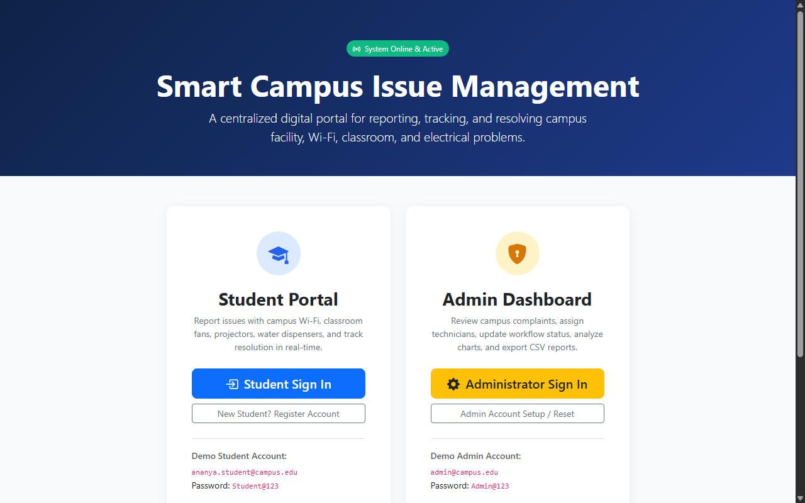
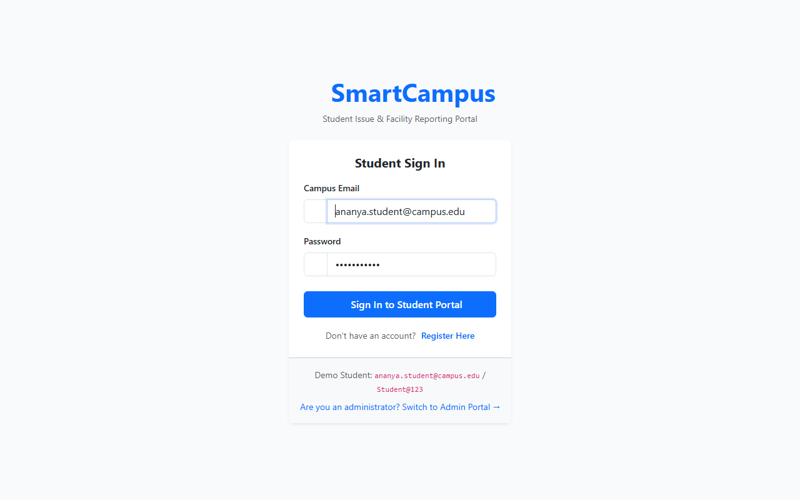
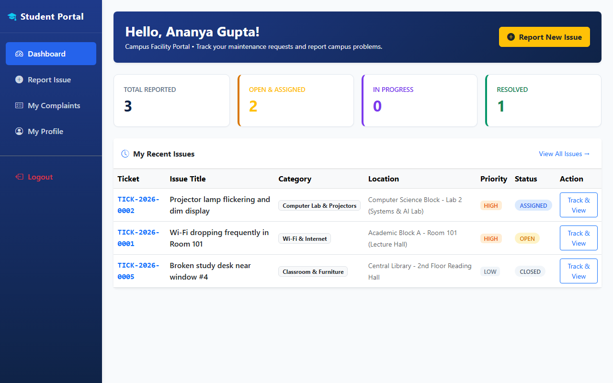
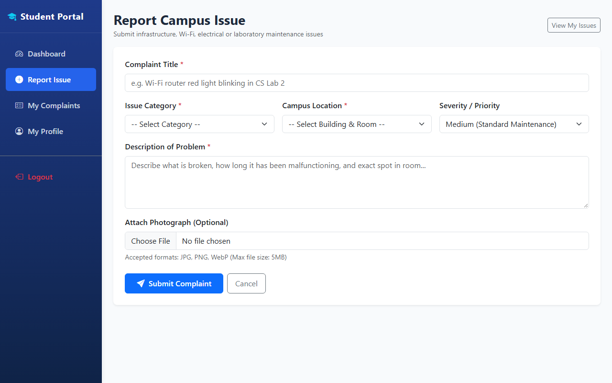
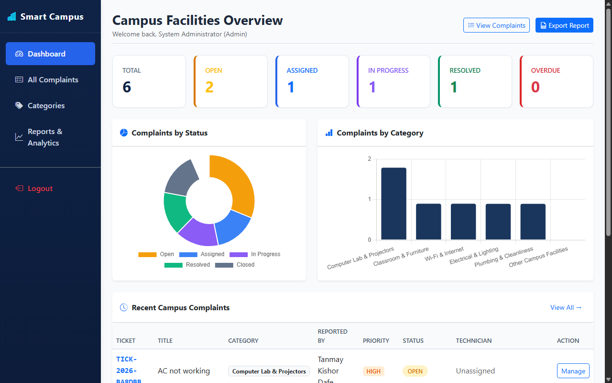
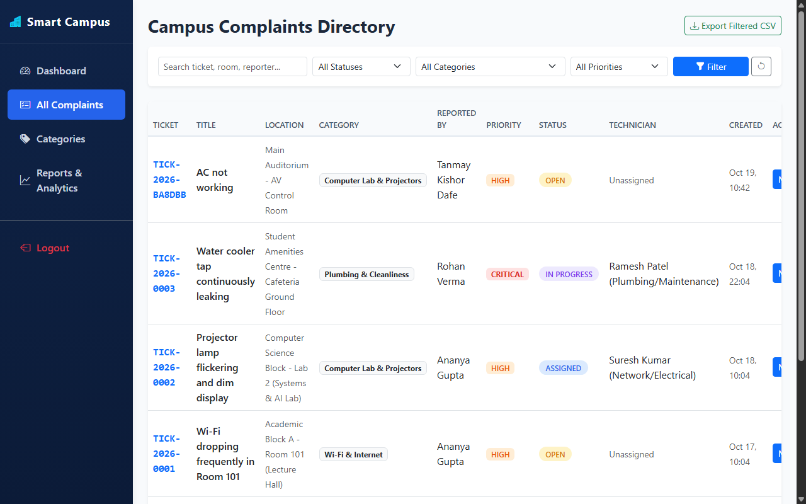

A Smart Campus Issue & Facility Management System provides reliable digital services to report classroom, laboratory, Wi-Fi, and electrical issues, assign campus technicians, and manage resolution workflows. The system seamlessly connects students, technicians, and administrators through native Android mobile clients, responsive web portals, Core PHP REST APIs, and a relational MySQL database.
OPEN ➔ ASSIGNED ➔ IN_PROGRESS ➔ RESOLVED ➔ CLOSED).ticket_history) and real-time chat (ticket_comments).| Sr. | Title of Paper | Author Name | Publisher / Journal | Year | Key Findings |
|---|---|---|---|---|---|
| 1 | Smart Campus Facility Management System Using Mobile Application and IoT | S. Sharma, R. Verma, and P. Kulkarni | IEEE Access | 2025 | Evaluated mobile-based complaint registration for college campuses; demonstrated 42% reduction in maintenance turnaround time and improved student satisfaction. |
| 2 | Design and Implementation of Web-Based Campus Maintenance Ticketing System | K. Patel, A. Deshmukh, and M. Joshi | Int. Journal of Computer Applications | 2024 | Examined role-based workflow for university facility management; highlighted priority queues and photo evidence as critical factors for technician dispatch accuracy. |
| 3 | Evaluation of Service Usability in Campus Issue Tracking Platforms | M. Al-Farooq, H. Al-Nuaim, and S. Tariq | Journal of Info Tech in Education | 2023 | Applied System Usability Scale (SUS) to college issue reporting tools; reported average SUS score of 74.2 when simplified multi-category forms and real-time tracking are provided. |
| Sr. | Title of Paper | Author Name | Publisher / Journal | Year | Key Findings |
|---|---|---|---|---|---|
| 4 | Automated Campus Infrastructure Maintenance and SLA Tracking Architecture | R. Kumar, S. Sengupta, and V. Rao | Int. Journal of Engg. & Technology | 2022 | Analyzed SLA breach indicators and automated priority assignment; showed that category-based routing prevents administrative bottlenecks and delays. |
| 5 | Mobile-Driven Civic and Facility Problem Reporting Systems: A Survey | D. J. Richardson and E. Gomez | ACM Computing Surveys | 2021 | Identified that user-contributed photos, transparent comment threads, and audit history logs are vital for end-user accountability and trust. |
Existing research confirms that manual paper registers and informal messages in university campuses cause unrecorded issues and resolution bottlenecks. Combining native mobile reporting with photo verification, category routing, automated SLA deadlines, and transparent status workflows significantly enhances institutional maintenance efficiency.
In educational institutions, campus maintenance complaints (broken fans, Wi-Fi connectivity faults, dim projectors, leaking water coolers, damaged classroom desks) are recorded in manual paper registers, verbal complaints to peons, or disconnected WhatsApp chats.
OPEN ➔ ASSIGNED ➔ IN_PROGRESS ➔ RESOLVED ➔ CLOSED).users: Students, Technicians, Administratorscategories: Wi-Fi, Electrical, Furniture, Computer Lab, Cleanlinesslocations: Campus buildings, classrooms, labs, and QR tokenstickets: Master issue records with priority, photo, and SLA timestampsticket_history: Immutable transition log with user IDs and commentsticket_comments: Interactive communication between reporter and staffTICK-2026-0001), and computes SLA deadline.tickets table with status OPEN and logged in ticket_history.IN_PROGRESS, completes repair, and marks RESOLVED.CLOSED.





TICK-2026-0001).Department of Information Technology • St. Vincent Pallotti College of Engineering and Technology, Nagpur
localhost/SmartCampus/